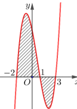
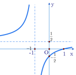
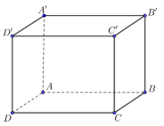
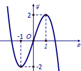
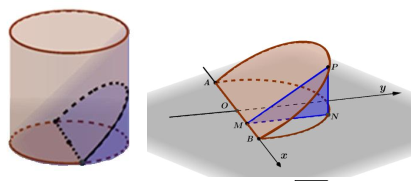
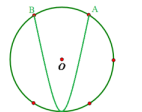
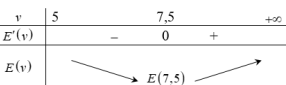

ĐỀ THI TOÁN - ĐỀ SỐ 19 HOT
Phần I: Trắc Nghiệm Nhiều Lựa Chọn
Tóm tắt kiến thức: Nguyên hàm
Nguyên hàm của \( f(x) = x^n \) là \( \int x^n dx = \frac{1}{n+1} x^{n+1} + C \), với \( n \neq -1 \).
Câu 1:
Nguyên hàm của hàm số \( f(x) = x^4 \) là:
Chọn đáp án:
Lời giải:
\( \int x^4 dx = \frac{1}{5} x^5 + C \).
Đáp án: A.
Tóm tắt kiến thức: Diện tích hình phẳng
Diện tích hình phẳng giới hạn bởi \( y = f(x) \), \( y = 0 \), \( x = a \), \( x = b \) là \( S = \int_a^b |f(x)| dx \). Nếu \( f(x) \) đổi dấu, chia khoảng tích phân.
Câu 2:
Cho hàm số \( y = f(x) \) liên tục trên \( \mathbb{R} \). Gọi \( S \) là diện tích hình phẳng giới hạn bởi các đường \( y = f(x) \), \( y = 0 \), \( x = -2 \) và \( x = 3 \) (như hình vẽ):

Mệnh đề nào đúng đây đúng?
Chọn đáp án:
Lời giải:
Diện tích: \( S = \int_{-2}^3 |f(x)| dx = \int_{-2}^1 |f(x)| dx + \int_1^3 |f(x)| dx \).
Vì \( f(x) > 0 \) trên \([-2; 1]\) và \( f(x) < 0 \) trên \([1; 3]\), nên:
\( S = \int_{-2}^1 f(x) dx + \int_1^3 (-f(x)) dx = \int_{-2}^1 f(x) dx - \int_1^3 f(x) dx \).
Đáp án: B.
Tóm tắt kiến thức: Phương sai và độ lệch chuẩn
Phương sai: \( S^2 = \frac{1}{n} \sum f_i x_i^2 - \bar{x}^2 \). Độ lệch chuẩn: \( S = \sqrt{S^2} \). Phương sai cao hơn nghĩa là độ rủi ro lớn hơn.
Câu 3:
Bảng sau thống kê giá đóng cửa (đơn vị: nghìn đồng) của hai mã cổ phiếu \( A \) và \( B \) trong 50 ngày giao dịch liên tiếp:
| Giá đóng cửa | \([120; 122)\) | \([122; 124)\) | \([124; 126)\) | \([126; 128)\) | \([128; 130)\) |
|---|---|---|---|---|---|
| Cổ phiếu \( A \) | 8 | 9 | 12 | 10 | 11 |
| Cổ phiếu \( B \) | 16 | 4 | 3 | 6 | 21 |
Chọn đáp án:
Lời giải:
Giá trị đại diện: 121, 123, 125, 127, 129.
- Cổ phiếu \( A \):
Trung bình: \( \bar{x}_1 = \frac{8 \cdot 121 + 9 \cdot 123 + 12 \cdot 125 + 10 \cdot 127 + 11 \cdot 129}{50} = 125,28 \).
Phương sai: \( S_1^2 = \frac{1}{50} (8 \cdot 121^2 + 9 \cdot 123^2 + 12 \cdot 125^2 + 10 \cdot 127^2 + 11 \cdot 129^2) - 125,28^2 = 7,5216 \).
- Cổ phiếu \( B \):
Trung bình: \( \bar{x}_2 = \frac{16 \cdot 121 + 4 \cdot 123 + 3 \cdot 125 + 6 \cdot 127 + 21 \cdot 129}{50} = 125,48 \).
Phương sai: \( S_2^2 = \frac{1}{50} (16 \cdot 121^2 + 4 \cdot 123^2 + 3 \cdot 125^2 + 6 \cdot 127^2 + 21 \cdot 129^2) - 125,48^2 = 12,4096 \).
Vì \( S_2^2 > S_1^2 \), cổ phiếu \( B \) có độ rủi ro cao hơn.
Đáp án: C.
Tóm tắt kiến thức: Vector pháp tuyến
Vector pháp tuyến của mặt phẳng \( ax + by + cz + d = 0 \) là \( (a; b; c) \). Hai vector cùng phương nếu tỷ lệ các thành phần bằng nhau.
Câu 4:
Trong không gian với hệ trục tọa độ \( Oxyz \), cho mặt phẳng \( (P) \) có phương trình \( -2x + 2y - z - 3 = 0 \). Mặt phẳng \( (P) \) có vector pháp tuyến là:
Chọn đáp án:
Lời giải:
Vector pháp tuyến của mặt phẳng \( -2x + 2y - z - 3 = 0 \) là \( (-2; 2; -1) \).
Kiểm tra: \( (4; -4; 2) = -2(-2; 2; -1) \), cùng phương.
Đáp án: A.
Tóm tắt kiến thức: Tiệm cận đứng
Đối với hàm số \( y = \frac{ax + b}{cx + d} \), tiệm cận đứng tại \( x = -\frac{d}{c} \).
Câu 5:
Cho hàm số \( y = \frac{ax + b}{cx + d} (c \neq 0, ad - bc \neq 0) \) có đồ thị như hình vẽ bên:

Tiệm cận đứng của đồ thị hàm số là:
Chọn đáp án:
Lời giải:
Từ đồ thị, tiệm cận đứng là \( x = -1 \).
Đáp án: A.
Tóm tắt kiến thức: Phương trình lũy thừa
Phương trình \( a^{f(x)} = a^g \Rightarrow f(x) = g \), nếu \( a > 0 \) và \( a \neq 1 \).
Câu 6:
Tìm nghiệm của phương trình \( 5^{x+1} = 125 \):
Chọn đáp án:
Lời giải:
\( 5^{x+1} = 125 \Leftrightarrow 5^{x+1} = 5^3 \Leftrightarrow x + 1 = 3 \Leftrightarrow x = 2 \).
Đáp án: B.
Tóm tắt kiến thức: Phương trình mặt cầu
Mặt cầu \( x^2 + y^2 + z^2 + 2ax + 2by + 2cz + d = 0 \) có tâm \( (-a; -b; -c) \), bán kính \( R = \sqrt{a^2 + b^2 + c^2 - d} \).
Câu 7:
Trong không gian với hệ trục tọa độ \( Oxyz \), cho mặt cầu \( (S): x^2 + y^2 + z^2 - 4x + 8y - 2z - 4 = 0 \). Tìm tọa độ tâm \( I \) và bán kính \( R \) của mặt cầu \( (S) \):
Chọn đáp án:
Lời giải:
Phương trình mặt cầu: \( (x - 2)^2 + (y + 4)^2 + (z - 1)^2 = 25 \).
Tâm: \( I(2; -4; 1) \), bán kính: \( R = \sqrt{25} = 5 \).
Đáp án: A.
Tóm tắt kiến thức: Góc trong hình học không gian
Góc giữa đường thẳng và mặt phẳng là góc giữa đường thẳng và hình chiếu của nó trên mặt phẳng.
Câu 8:
Cho hình chóp \( S.ABCD \) có đáy \( ABCD \) là hình chữ nhật và \( SA \perp (ABCD) \). Góc giữa \( SD \) và mặt phẳng \( (ABCD) \) là:
Chọn đáp án:
Lời giải:
Hình chiếu của \( SD \) trên \( (ABCD) \) là \( AD \). Góc giữa \( SD \) và \( (ABCD) \) là \( \angle SDA \).
Đáp án: B.
Tóm tắt kiến thức: Bất phương trình logarit
Bất phương trình \( \log_a f(x) < b \Leftrightarrow 0 < f(x) < a^b \), nếu \( a > 1 \).
Câu 9:
Tìm tập nghiệm của bất phương trình \( \log_3 (2x - 1) < 2 \):
Chọn đáp án:
Lời giải:
\( \log_3 (2x - 1) < 2 \Leftrightarrow \begin{cases} 2x - 1 > 0 \\ 2x - 1 < 3^2 \end{cases} \Leftrightarrow \begin{cases} x > \frac{1}{2} \\ x < 5 \end{cases} \).
Vậy \( x \in \left(\frac{1}{2}; 5\right) \).
Đáp án: D.
Tóm tắt kiến thức: Cấp số nhân
Trong cấp số nhân, \( u_n = u_1 q^{n-1} \). Công bội \( q \) được tính từ \( u_n = u_1 q^{n-1} \).
Câu 10:
Cho cấp số nhân \( (u_n) \) với \( u_1 = -2 \), \( u_4 = -250 \). Công bội của cấp số nhân đã cho bằng:
Chọn đáp án:
Lời giải:
\( u_4 = u_1 q^3 \Leftrightarrow -250 = -2 q^3 \Leftrightarrow q^3 = 125 \Leftrightarrow q = 5 \).
Đáp án: D.
Tóm tắt kiến thức: Góc giữa các vector
Góc giữa hai vector \( \vec{a} \) và \( \vec{b} \): \( \cos \theta = \frac{\vec{a} \cdot \vec{b}}{|\vec{a}| |\vec{b}|} \). Trong hình lập phương, các cạnh và đường chéo có góc đặc biệt.
Câu 11:
Cho hình lập phương \( ABCD.A'B'C'D' \) (minh họa như hình bên):

Khẳng định nào sau đây là sai?
Chọn đáp án:
Lời giải:
Đặt cạnh lập phương dài 1, tọa độ: \( A(0;0;0) \), \( B(1;0;0) \), \( C(1;1;0) \), \( D(0;1;0) \), \( A'(0;0;1) \), \( B'(1;0;1) \), \( C'(1;1;1) \), \( D'(0;1;1) \).
A. \( \overrightarrow{AB} = (1;0;0) \), \( \overrightarrow{A'D'} = (0;1;1) \). Tích vô hướng: \( 1 \cdot 0 + 0 \cdot 1 + 0 \cdot 1 = 0 \Rightarrow 90^\circ \). Đúng.
B. \( \overrightarrow{A'C'} = (1;1;1) \). Tích vô hướng: \( 1 \cdot 1 + 0 \cdot 1 + 0 \cdot 1 = 1 \), \( \cos \theta = \frac{1}{\sqrt{3}} \Rightarrow \theta = 45^\circ \). Đúng.
C. \( \overrightarrow{AC} = (1;1;0) \), \( \overrightarrow{B'D'} = (-1;1;0) \). Tích vô hướng: \( 1 \cdot (-1) + 1 \cdot 1 = 0 \Rightarrow 90^\circ \). Đúng.
D. \( \overrightarrow{A'A} = (0;0;-1) \), \( \overrightarrow{CB'} = (0;-1;1) \). Tích vô hướng: \( 0 \cdot 0 + 0 \cdot (-1) + (-1) \cdot 1 = -1 \), \( \cos \theta = \frac{-1}{\sqrt{2}} \Rightarrow \theta = 135^\circ \). Sai.
Đáp án: D.
Tóm tắt kiến thức: Số nghiệm phương trình
Số nghiệm của phương trình \( f(x) = k \) là số giao điểm của đồ thị \( y = f(x) \) với đường \( y = k \).
Câu 12:
Cho hàm số có đồ thị như hình vẽ bên:

Số nghiệm thực của phương trình \( f(x) = 1 \) là:
Chọn đáp án:
Lời giải:
Từ đồ thị, đường \( y = 1 \) cắt đồ thị tại 3 điểm.
Đáp án: D.
Phần II: Trắc Nghiệm Đúng/Sai
Tóm tắt kiến thức: Hàm phân thức và tính đơn điệu
Đạo hàm của \( y = \frac{ax + b}{cx + d} \) là \( y' = \frac{ad - bc}{(cx + d)^2} \). Hàm nghịch biến nếu \( y' < 0 \).
Câu 13:
Cho hàm số \( y = \frac{2x + 1}{x - 2} \). Xét các phát biểu sau:
Chọn đáp án cho từng phát biểu:
a)
b)
c)
d)
Lời giải:
a) \( f(3) = \frac{2 \cdot 3 + 1}{3 - 2} = 7 \), \( f(7) = \frac{2 \cdot 7 + 1}{7 - 2} = 3 \). Sai.
b) \( f'(x) = \frac{(2)(x - 2) - (2x + 1)(1)}{(x - 2)^2} = -\frac{5}{(x - 2)^2} \). Đúng.
c) \( f'(x) = -\frac{5}{(x - 2)^2} < 0 \) trên \( (-\infty; 2) \) và \( (2; +\infty) \), không đúng trên toàn \( \mathbb{R} \). Sai.
d) Vì \( f'(x) < 0 \), hàm nghịch biến trên \([3; 7]\), giá trị nhỏ nhất là \( f(7) = 3 \). Đúng.
Đáp án: a) Sai, b) Đúng, c) Sai, d) Đúng.
Tóm tắt kiến thức: Thể tích hình nêm
Thể tích hình nêm được tính bằng tích phân diện tích mặt cắt: \( V = \int_a^b S(x) dx \).
Câu 14:
Cho một vật thể bằng gỗ có dạng hình trụ với chiều cao và bán kính đáy cùng bằng 1. Cắt khối gỗ đó bởi mặt phẳng đi qua đường kính của một mặt đáy của khối gỗ và tạo với mặt đáy tọa độ như hình vẽ:

Phát biểu sau đây đúng hay sai?
Chọn đáp án cho từng phát biểu:
a)
b)
c)
d)
Lời giải:
a) Phương trình đường tròn: \( x^2 + y^2 = 1 \), nửa đường tròn: \( y = \sqrt{1 - x^2} \). Sai.
b) Trong \( \triangle OMN \), vuông tại \( M \), \( OM = x \), \( ON = 1 \), nên \( MN = \sqrt{1 - x^2} \). Đúng.
c) \( MN = \sqrt{1 - x^2} \), \( NP = MN \tan 30^\circ = \frac{\sqrt{1 - x^2}}{\sqrt{3}} \). Diện tích: \( S_{MNP} = \frac{1}{2} MN \cdot NP = \frac{1 - x^2}{2 \sqrt{3}} \neq 1 - x^2 \). Sai.
d) Thể tích: \( V = \int_{-1}^1 \frac{1 - x^2}{2 \sqrt{3}} dx = \frac{2 \sqrt{3}}{9} \). Đúng.
Đáp án: a) Sai, b) Đúng, c) Sai, d) Đúng.
Tóm tắt kiến thức: Xác suất có điều kiện
Xác suất có điều kiện: \( P(A|B) = \frac{P(A \cap B)}{P(B)} \), với \( P(B) = P(B|A)P(A) + P(B|\bar{A})P(\bar{A}) \).
Câu 15:
Nghiên cứu số bệnh nhân bị bệnh \( X \) trong một bệnh viện, người ta thấy rằng có 2 nguyên nhân gây ra bệnh \( X \) là do nhiễm một trong hai chủng virus \( V19 \) và \( V20 \). Bệnh nhân bị bệnh \( X \) do chủng virus \( V19 \) chiếm 70% số bệnh nhân và nhiễm bệnh \( X \) do chủng virus \( V20 \) là 30%. Trong những bệnh nhân bị bệnh \( X \) do chủng virus \( V20 \) thì có 50% bị biến chứng. Trong tất cả bệnh nhân bị bệnh \( X \), các phát biểu sau đúng hay sai?
Chọn đáp án cho từng phát biểu:
a)
b)
c)
d)
Lời giải:
Gọi \( A \): bệnh án bị biến chứng, \( B \): bệnh nhân nhiễm virus \( V19 \).
\( P(B) = 0,7 \), \( P(\bar{B}) = 0,3 \), \( P(A|B) = 0,3 \), \( P(A|\bar{B}) = 0,5 \).
a) \( P(A|B) = 0,3 \). Đúng.
b) \( P(A|\bar{B}) = 0,5 \). Đúng.
c) \( P(A) = P(B) \cdot P(A|B) + P(\bar{B}) \cdot P(A|\bar{B}) = 0,7 \cdot 0,3 + 0,3 \cdot 0,5 = 0,36 \neq 0,32 \). Sai.
d) \( P(B|A) = \frac{P(B) \cdot P(A|B)}{P(A)} = \frac{0,7 \cdot 0,3}{0,36} = \frac{7}{12} \). Đúng.
Đáp án: a) Đúng, b) Đúng, c) Sai, d) Đúng.
Tóm tắt kiến thức: Phương trình đường thẳng và khoảng cách
Phương trình đường thẳng qua hai điểm, giao điểm với mặt phẳng, và khoảng cách giữa hai điểm.
Câu 16:
Một phần mềm mô phỏng vận động viên đang tập bắn súng trong không gian \( Oxyz \). Cho biết trục \( d \) của nòng súng đi qua hai điểm \( A(1; 0; 3) \) và \( B(2; 1; 2) \) và đạn được bắn theo một đường thẳng. Mặt phẳng chứa tấm bia là mặt phẳng \( (Oyz) \). Biết rằng tâm của tấm bia có tọa độ là \( I(0; 3; 7) \). Khi viên đạn được bắn vào bia, xét các phát biểu sau:
Chọn đáp án cho từng phát biểu:
a)
b)
c)
d)
Lời giải:
a) \( \overrightarrow{AB} = (2-1; 1-0; 2-3) = (1; 1; -1) \). Đúng.
b) Phương trình đường thẳng: \( \begin{cases} x = 1 + t \\ y = t \\ z = 3 - t \end{cases} \). Sai.
c) Giao với \( (Oyz) \): \( x = 0 \Rightarrow 1 + t = 0 \Rightarrow t = -1 \). Tọa độ: \( (0; -1; 4) \). Đúng.
d) Khoảng cách \( MI = \sqrt{(3 - (-1))^2 + (7 - 4)^2} = \sqrt{16 + 9} = 5 \). Đúng.
Đáp án: a) Đúng, b) Sai, c) Đúng, d) Đúng.
Phần III: Trắc Nghiệm Trả Lời Ngắn
Tóm tắt kiến thức: Khoảng cách trong hình học không gian
Khoảng cách từ điểm đến mặt phẳng: \( d = \frac{|ax_0 + by_0 + cz_0 + d|}{\sqrt{a^2 + b^2 + c^2}} \), hoặc dùng hình chiếu vuông góc.
Câu 17:
Cho hình chóp \( S.ABC \) có đáy \( ABC \) là tam giác đều cạnh 2, cạnh bên \( SA \) vuông góc với đáy. Tính khoảng cách từ điểm \( A \) đến mặt phẳng \( (SBC) \) theo \( a \), biết \( SA = \sqrt{6} \). (Làm tròn kết quả đến hàng phần mười).
Nhập đáp án:
Lời giải:
Gọi \( E \) là trung điểm \( BC \), thì \( BC \perp AE \). Vì \( BC \perp SA \), suy ra \( BC \perp (SAE) \Rightarrow (SBC) \perp (SAE) \).
Trong \( (SAE) \), vẽ \( AF \perp SE \), suy ra \( AF \perp (SBC) \), do đó \( d(A, (SBC)) = AF \).
Trong \( \triangle SAE \), vuông tại \( A \):
\( AE = \sqrt{3} \), \( AS = \sqrt{6} \). Tính \( AF \): \( \frac{1}{AF^2} = \frac{1}{AS^2} + \frac{1}{AE^2} = \frac{1}{6} + \frac{1}{3} = \frac{1}{2} \Rightarrow AF = \sqrt{2} \approx 1,4 \).
Đáp án: 1.4.
Tóm tắt kiến thức: Bài toán đường đi ngắn nhất
Để tìm đường đi ngắn nhất qua tất cả các điểm, xét các lộ trình có thể và chọn tổng quãng đường nhỏ nhất.
Câu 18:
Cho sơ đồ mô tả khoảng cách (km) giữa các thành phố như hình:

Một người đi du lịch từ thành phố \( M \) đến thành phố \( P \) và muốn đi qua tất cả các thành phố \( A, B, N, C, D \) trước khi đến \( P \), biết rằng người đó chỉ đến các thành phố đó đúng một lần duy nhất. Hỏi người đó đi hết quãng đường ngắn nhất là bao nhiêu km?
Nhập đáp án:
Lời giải:
Lộ trình: \( M \to A \to B \to N \to C \to D \to P \). Tổng quãng đường: 47 km (theo đề).
Đáp án: 47.
Tóm tắt kiến thức: Diện tích hình phẳng
Diện tích phần giới hạn bởi hai đường \( y = f(x) \), \( y = g(x) \) từ \( a \) đến \( b \): \( S = \int_a^b |f(x) - g(x)| dx \).
Câu 19:
Bạn Hoan xây một bể cá hình tròn tâm \( O \) bán kính \( 10 \, \text{m} \) và chia nó thành 2 phần như hình vẽ sau:

Bạn Hoan sẽ thả cá cảnh với mật độ 4 con cá cảnh trên \( 1 \, \text{m}^2 \) ở phần bể giới hạn bởi đường tròn tâm \( O \) và parabol có trục đối xứng đi qua tâm \( O \) và chứa tâm \( O \). Gọi \( S \) là phần nguyên của diện tích phần thả cá. Hỏi bạn Hoan thả được bao nhiêu con cá cảnh trên phần bể có diện tích \( S \)?
Nhập đáp án:
Lời giải:
Đường tròn: \( x^2 + y^2 = 100 \), nửa cung: \( y = \sqrt{100 - x^2} \).
Parabol: \( y = \frac{1}{2} x^2 - 10 \), đi qua \( (6; 8) \), \( (-6; 8) \).
Diện tích: \( S = \int_{-6}^6 \left( \sqrt{100 - x^2} - \left( \frac{1}{2} x^2 - 10 \right) \right) dx \approx 160,35 \approx 160 \, \text{m}^2 \).
Số cá: \( 160 \cdot 4 = 640 \).
Đáp án: 640.
Tóm tắt kiến thức: Phương trình mặt phẳng
Mặt phẳng đi qua ba điểm thỏa mãn phương trình \( ax + by + cz + d = 0 \). Giải hệ để tìm \( a, b, c, d \).
Câu 20:
Trong mạng lưới ô vuông gồm các hình lập phương, người ta đưa ra một cách kiểm tra bốn nút lưới (đỉnh hình lập phương) bất kỳ có đồng phẳng hay không bằng cách gắn hệ trục tọa độ \( Oxyz \) vào khung lưới ô vuông và lập phương trình mặt phẳng đi qua ba nút lưới \( (4; 3; 1) \), \( (3; 2; 5) \) và mặt phẳng đi qua ba nút đó có phương trình \( x + my + nz + p = 0 \). Giá trị của \( m + n + p \) là bao nhiêu?
Nhập đáp án:
Lời giải:
Mặt phẳng \( x + my + nz + p = 0 \) đi qua \( (1; 1; 10) \), \( (4; 3; 1) \), \( (3; 2; 5) \):
\( \begin{cases} m + 10n + p = -1 \\ 3m + n + p = -4 \\ 2m + 5n + p = -3 \end{cases} \).
Giải: \( m = 3 \), \( n = -2 \), \( p = -11 \). Vậy \( m + n + p = 3 - 2 - 11 = -10 \).
Đáp án: -10.
Tóm tắt kiến thức: Tối ưu hóa
Tìm cực trị của hàm bằng cách lấy đạo hàm, giải \( f'(x) = 0 \), và xét bảng biến thiên.
Câu 21:
Một con cá bơi ngược dòng để vượt khoảng cách là \( 100 \, \text{km} \). Vận tốc dòng nước là \( 5 \, \text{km/h} \). Khi bơi ngược dòng, vận tốc của cá là \( v - 5 \, \text{km/h} \). Năng lượng tiêu hao của cá được tính bởi \( E(v) = c \cdot v^3 \cdot \frac{100}{v - 5} \). Tìm giá trị lớn nhất của \( b - a \) khi vận tốc bơi của cá thuộc khoảng \( (a; b) \) sao cho năng lượng tiêu hao giảm.
Nhập đáp án:
Lời giải:
\( E(v) = 100c \cdot \frac{v^3}{v - 5} \). Đạo hàm:
\( E'(v) = 100c \cdot \frac{3v^2 (v - 5) - v^3}{(v - 5)^2} = 100c \cdot \frac{v^2 (2v - 15)}{(v - 5)^2} \).
\( E'(v) = 0 \Leftrightarrow v = 7,5 \). Bảng biến thiên:

Năng lượng giảm trên \( (5; 7,5) \). Vậy \( b - a = 7,5 - 5 = 2,5 \).
Đáp án: 2.5.
Tóm tắt kiến thức: Xác suất có điều kiện
Xác suất có điều kiện: \( P(A|B) = \frac{P(A \cap B)}{P(B)} \), với \( P(B) = P(B|A)P(A) + P(B|\bar{A})P(\bar{A}) \).
Câu 22:
Hộp thứ nhất có 3 viên bi xanh và 6 viên bi đỏ. Hộp thứ hai có 3 viên bi xanh và 7 viên bi đỏ. Các viên bi có cùng kích thước và khối lượng. Lấy ra ngẫu nhiên 1 viên bi từ hộp thứ nhất chuyển sang hộp thứ hai. Sau đó lại lấy ra ngẫu nhiên đồng thời 2 viên bi từ hộp thứ hai. Biết rằng 2 viên bi lấy ra từ hộp thứ hai là bi xanh. Tính xác suất viên bi lấy ra từ hộp thứ nhất cũng là bi xanh.
Nhập đáp án:
Lời giải:
Gọi \( A \): viên bi chuyển là xanh, \( B \): hai viên lấy ra từ hộp thứ hai là xanh.
\( P(A) = \frac{3}{9} = \frac{1}{3} \), \( P(\bar{A}) = \frac{2}{3} \).
Nếu chuyển bi xanh: hộp thứ hai có 4 xanh, 7 đỏ, \( P(B|A) = \frac{C_4^2}{C_{11}^2} = \frac{6}{55} \).
Nếu chuyển bi đỏ: hộp thứ hai có 3 xanh, 8 đỏ, \( P(B|\bar{A}) = \frac{C_3^2}{C_{11}^2} = \frac{3}{55} \).
\( P(B) = P(A) \cdot P(B|A) + P(\bar{A}) \cdot P(B|\bar{A}) = \frac{1}{3} \cdot \frac{6}{55} + \frac{2}{3} \cdot \frac{3}{55} = \frac{4}{55} \).
\( P(A|B) = \frac{P(A) \cdot P(B|A)}{P(B)} = \frac{\frac{1}{3} \cdot \frac{6}{55}}{\frac{4}{55}} = \frac{1}{2} = 0,5 \).
Đáp án: 0.5.